Area Component
The Area Component is a very powerful tool when working with Sprites or SpriteText, allowing for the manipulation of sizes without losing visual acuity. It is able to work in conjunction with the SpriteSourceEditor or the SpriteTextBlock component in order to define the Area that the Sprite or SpriteText cover.
Nine-Slicing Sprites
Often when scaling Sprites (particularly UI sprites) the edges of the sprite will be stretched causing undesirable results as can be seen here:
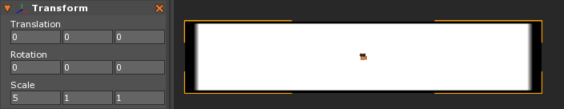
By adding an Area Component instead, the Sprite can be enlarged without having the issues of blurry and stretched edges. Changing the SpriteFill option found in the SpriteSourceEditor to NineSlice
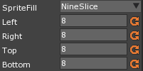
and then changing the Left Right Top and Bottom options that come after it changes the borders the Sprite uses to Stretch. It then stretches based on this format instead:
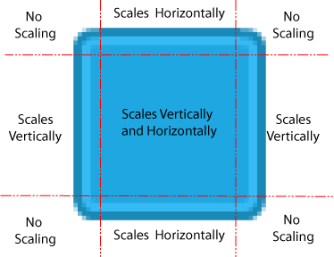
By using these options instead of simply using Scale, Sprites can be increased in size while still being clear visually.
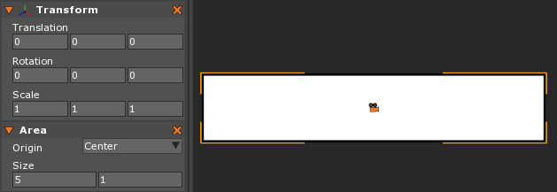
The NineSliceClipped option works much the same way, with the only difference being how it effects the Sprite if it is shrunk to be smaller than the size of the sliced dimensions. NineSlice will squish the edges together while NineSliceClipped will keep the scaling of the sliced areas and clip them at the intersections.
Tiling Sprites
Similar to using the NineSlice option, any Sprite can use the Area in order to tile itself and repeatedly copy itself when stretched.
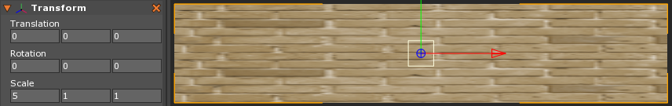
Adjusting the Scale of a Sprite like this isn’t the solution. Instead attach the Area Component and change the SpriteFill option in the SpriteSourceEditor to Tiled.
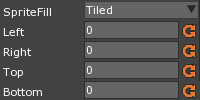
This will allow the Area component to properly adjust and repeat the image as the Size property is increased beyond the original scale of the SpriteSource.
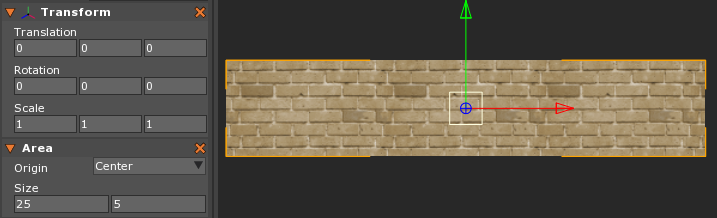
Organizing Text
By utilizing the Area Component alongside the SpriteText and SpriteTextBlock Components, it becomes possible to gain a large amount of control over how the SpriteText is displayed. The SpriteTextBlock already gives the ability to set the formatting of the Text, however it’s missing alignment options.
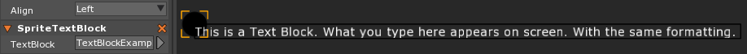 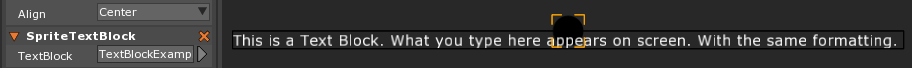 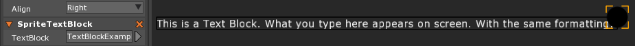
Adding the Area Component however will give the ability to define the area the text is displayed in, and then changes the alignment of the text inside that area. It also will use word wrapping to make sure no text spills outside of the defined area.
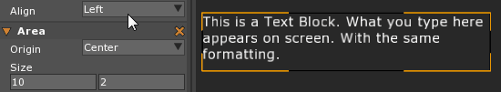